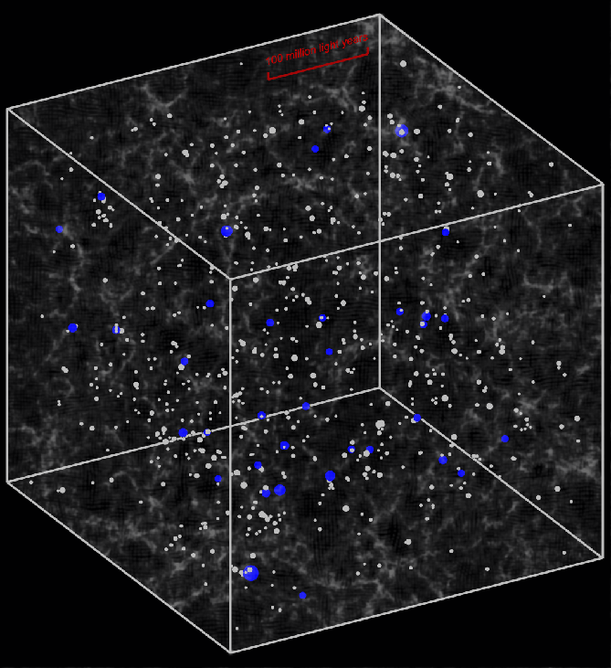

February 9, 2007
Distant quasars live in massive dark matter halos

This illustration shows the distribution of dark matter, massive halos, and luminous quasars in a simulation of the early universe, shown 1.6 billion years after the Big Bang. Gray-colored filamentary structure shows the distribution of "invisible" dark matter. Small white circles mark concentrated "halos" of dark matter more massive than 3 trillion times the mass of the sun. Larger blue circles mark the most massive halos, more than 7 trillion times of the sun, which host the most luminous quasars. The strong clustering of the quasars in the SDSS sample demonstrates that they reside in these rare, very massive halos.
This box is 360 million light years across.
scp